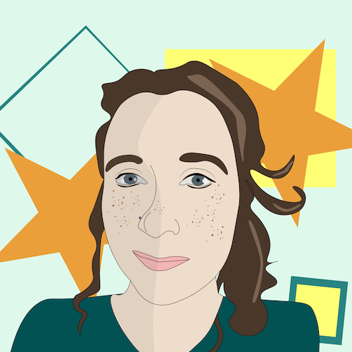

Home
welcome. i'm a web and graphic designer. this is where i will be showcasing my work and my love for pixel art.
i'm also still very fond of design from the early and mid 2000s, and enjoy creating sites that remind me of virtual pet sites in
my spare time. please take a look around, if you interested in working together, check out my contact page for me info on how
to do so.
